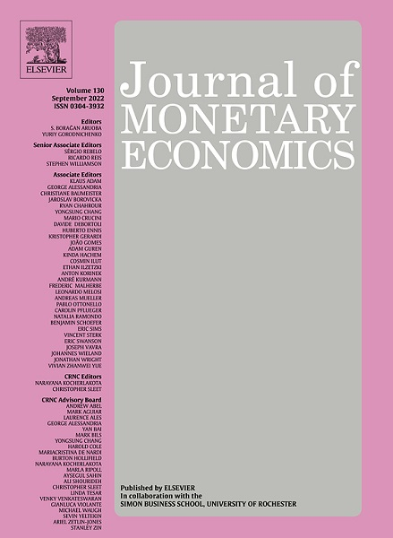

1. Some Unpleasant Markup Arithmetic: Production Function Elasticities and their Estimation from Production Data
with
Abstract: The ratio estimator of the markup is the ratio of the output elasticity for a flexible input to that input’s cost share in total revenue. We highlight identification and estimation issues pertaining to this ratio estimator, when firm-level output prices are not observed. If the revenue elasticity for a flexible input is used in place of the output elasticity, then profit maximization implies that the ratio estimator is identically equal to one, and thus is uninformative about markups. Concerning estimation of output elasticities: with only revenue data, profit maximization also implies that the output elasticity is not identified non-parametrically from estimation of the revenue production function, if firms have market power. Even with separate output price and quantity data, it is challenging to estimate the output elasticity consistently if there are non-linear productivity dynamics and firms face heterogeneous demand schedules, with unobserved variation in a demand shifter.

![]()
![]()
![]()
![]()